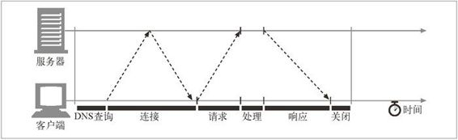

4.2 对 TCP 性能的考虑
HTTP 紧挨着 TCP，位于其上层，所以 HTTP 事务的性能在很大程度上取决于底层 TCP 通道的性能。本节重点介绍了一些很重要的、对这些 TCP 连接的性能考虑。理解了 TCP 的某些基本性能特点之后，就可以更好地理解 HTTP 的连接优化特性，这样就能设计实现一些更高性能的 HTTP 应用程序了。
本节要求大家对 TCP 协议的内部细节有一定的了解。如果对 TCP 性能考虑的细节不感兴趣（或者很熟悉这些细节），可以直接跳到 4.3 节。TCP 是个很复杂的话题，所以这里我们只能提供对 TCP 性能的简要概述。本章末尾的 4.8 节列出了一些很好的 TCP 参考书，以供参考。
4.2.1 HTTP事务的时延
我们来回顾一下，在 HTTP 请求的过程中会出现哪些网络时延，并以此开始我们的 TCP 性能之旅。图 4-7 描绘了 HTTP 事务主要的连接、传输以及处理时延。

图 4-7 串行 HTTP 事务的时间线
注意，与建立 TCP 连接，以及传输请求和响应报文的时间相比，事务处理时间可能是很短的。除非客户端或服务器超载，或正在处理复杂的动态资源，否则 HTTP 时延就是由 TCP 网络时延构成的。
HTTP 事务的时延有以下几种主要原因。
客户端首先需要根据 URI 确定 Web 服务器的 IP 地址和端口号。如果最近没有对 URI 中的主机名进行访问，通过 DNS 解析系统将 URI 中的主机名转换成一个 IP 地址可能要花费数十秒的时间 1。
1 幸运的是，大多数 HTTP 客户端都有一个小的 DNS 缓存，用来保存近期所访问站点的 IP 地址。如果已经在本地“缓存”（记录）了 IP 地址，查询就可以立即完成。因为大多数 Web 浏览器浏览的都是少数常用站点，所以通常都可以很快地将主机名解析出来。
接下来，客户端会向服务器发送一条 TCP 连接请求，并等待服务器回送一个请求接受应答。每条新的 TCP 连接都会有连接建立时延。这个值通常最多只有一两秒钟，但如果有数百个 HTTP 事务的话，这个值会快速地叠加上去。
一旦连接建立起来了，客户端就会通过新建立的 TCP 管道来发送 HTTP 请求。数据到达时，Web 服务器会从 TCP 连接中读取请求报文，并对请求进行处理。因特网传输请求报文，以及服务器处理请求报文都需要时间。
然后，Web 服务器会回送 HTTP 响应，这也需要花费时间。
这些 TCP 网络时延的大小取决于硬件速度、网络和服务器的负载，请求和响应报文的尺寸，以及客户端和服务器之间的距离。TCP 协议的技术复杂性也会对时延产生巨大的影响。
4.2.2 性能聚焦区域
本节其余部分列出了一些会对 HTTP 程序员产生影响的、最常见的 TCP 相关时延，其中包括：
TCP 连接建立握手；
TCP 慢启动拥塞控制；
数据聚集的 Nagle 算法；
用于捎带确认的 TCP 延迟确认算法；
TIME_WAIT 时延和端口耗尽。
如果要编写高性能的 HTTP 软件，就应该理解上面的每一个因素。如果不需要进行这个级别的性能优化，可以跳过这部分内容。
4.2.3 TCP连接的握手时延
建立一条新的 TCP 连接时，甚至是在发送任意数据之前，TCP 软件之间会交换一系列的 IP 分组，对连接的有关参数进行沟通（参见图 4-8）。如果连接只用来传送少量数据，这些交换过程就会严重降低 HTTP 的性能。
图 4-8 在发送数据之前，TCP 要传送两个分组来建立连接
TCP 连接握手需要经过以下几个步骤。
请求新的 TCP 连接时，客户端要向服务器发送一个小的 TCP 分组（通常是 40 ～ 60 个字节）。这个分组中设置了一个特殊的 SYN 标记，说明这是一个连接请求。（参见图 4-8a）。
如果服务器接受了连接，就会对一些连接参数进行计算，并向客户端回送一个 TCP 分组，这个分组中的 SYN 和 ACK 标记都被置位，说明连接请求已被接受（参见图 4-8b）。
最后，客户端向服务器回送一条确认信息，通知它连接已成功建立（参见图 4-8c）。现代的 TCP 栈都允许客户端在这个确认分组中发送数据。
HTTP 程序员永远不会看到这些分组——这些分组都由 TCP/IP 软件管理，对其是不可见的。HTTP 程序员看到的只是创建 TCP 连接时存在的时延。
通常 HTTP 事务都不会交换太多数据，此时，SYN/SYN+ACK 握手（参见图 4-8a 和图 4-8b）会产生一个可测量的时延。TCP 连接的 ACK 分组（参见图 4-8c）通常都足够大，可以承载整个 HTTP 请求报文 2，而且很多 HTTP 服务器响应报文都可 以放入一个 IP 分组中去（比如，响应是包含了装饰性图片的小型 HTML 文件，或者是对浏览器高速缓存请求产生的 304 Not Modified 响应）。
2 因特网流量中的 IP 分组通常是几百字节，本地流量中的 IP 分组为 1500 字节左右。
最后的结果是，小的 HTTP 事务可能会在 TCP 建立上花费 50%，或更多的时间。后面的小节会讨论 HTTP 是如何通过重用现存连接，来减小这种 TCP 建立时延所造成的影响的。
4.2.4 延迟确认
由于因特网自身无法确保可靠的分组传输（因特网路由器超负荷的话，可以随意丢弃分组），所以 TCP 实现了自己的确认机制来确保数据的成功传输。
每个 TCP 段都有一个序列号和数据完整性校验和。每个段的接收者收到完好的段时，都会向发送者回送小的确认分组。如果发送者没有在指定的窗口时间内收到确认信息，发送者就认为分组已被破坏或损毁，并重发数据。
由于确认报文很小，所以 TCP 允许在发往相同方向的输出数据分组中对其进行“捎带”。TCP 将返回的确认信息与输出的数据分组结合在一起，可以更有效地利用网络。为了增加确认报文找到同向传输数据分组的可能性，很多 TCP 栈都实现了一种“延迟确认”算法。延迟确认算法会在一个特定的窗口时间（通常是 100 ～ 200 毫秒）内将输出确认存放在缓冲区中，以寻找能够捎带它的输出数据分组。如果在那个时间段内没有输出数据分组，就将确认信息放在单独的分组中传送。
但是，HTTP 具有双峰特征的请求 ??应答行为降低了捎带信息的可能。当希望有相反方向回传分组的时候，偏偏没有那么多。通常，延迟确认算法会引入相当大的时延。根据所使用操作系统的不同，可以调整或禁止延迟确认算法。
在对 TCP 栈的任何参数进行修改之前，一定要对自己在做什么有清醒的认识。TCP 中引入这些算法的目的是防止设计欠佳的应用程序对因特网造成破坏。对 TCP 配置进行的任意修改，都要绝对确保应用程序不会引发这些算法所要避免的问题。
4.2.5 TCP慢启动
TCP 数据传输的性能还取决于 TCP 连接的使用期（age）。TCP 连接会随着时间进行自我“调谐”，起初会限制连接的最大速度，如果数据成功传输，会随着时间的推移提高传输的速度。这种调谐被称为 TCP 慢启动（slow start），用于防止因特网的突然过载和拥塞。
TCP 慢启动限制了一个 TCP 端点在任意时刻可以传输的分组数。简单来说，每成功接收一个分组，发送端就有了发送另外两个分组的权限。如果某个 HTTP 事务有大量数据要发送，是不能一次将所有分组都发送出去的。必须发送一个分组，等待确认；然后可以发送两个分组，每个分组都必须被确认，这样就可以发送四个分组了，以此类推。这种方式被称为“打开拥塞窗口”。
由于存在这种拥塞控制特性，所以新连接的传输速度会比已经交换过一定量数据的、“已调谐”连接慢一些。由于已调谐连接要更快一些，所以 HTTP 中有一些可以重用现存连接的工具。本章稍后会介绍这些 HTTP“持久连接”。
4.2.6 Nagle算法与TCP_NODELAY
TCP 有一个数据流接口，应用程序可以通过它将任意尺寸的数据放入 TCP 栈中——即使一次只放一个字节也可以！但是，每个 TCP 段中都至少装载了 40 个字节的标记和首部，所以如果 TCP 发送了大量包含少量数据的分组，网络的性能就会严重下降。3
3 发送大量单字节分组的行为称为“发送端傻窗口综合症”。这种行为效率很低、违反社会道德，而且可能会影响其他的因特网流量。
Nagle 算法（根据其发明者 John Nagle 命名）试图在发送一个分组之前，将大量 TCP 数据绑定在一起，以提高网络效率。RFC 896“IP/TCP 互连网络中的拥塞控制”对此算法进行了描述。
Nagle 算法鼓励发送全尺寸（LAN 上最大尺寸的分组大约是 1500 字节，在因特网上是几百字节）的段。只有当所有其他分组都被确认之后，Nagle 算法才允许发送非全尺寸的分组。如果其他分组仍然在传输过程中，就将那部分数据缓存起来。只有当挂起分组被确认，或者缓存中积累了足够发送一个全尺寸分组的数据时，才会将缓存的数据发送出去。4
4 这个算法有几种变体，包括对超时和确认逻辑的修改，但基本算法会使数据的缓存比一个 TCP 段小一些。
Nagle 算法会引发几种 HTTP 性能问题。首先，小的 HTTP 报文可能无法填满一个分组，可能会因为等待那些永远不会到来的额外数据而产生时延。其次，Nagle 算法与延迟确认之间的交互存在问题——Nagle 算法会阻止数据的发送，直到有确认分组抵达为止，但确认分组自身会被延迟确认算法延迟 100 ～ 200 毫秒。5
5 使用管道化连接（本章稍后介绍）时这些问题可能会更加严重，因为客户端可能会有多条报文要发送给同一个服务器，而且不希望有时延存在。
HTTP 应用程序常常会在自己的栈中设置参数 TCP_NODELAY，禁用 Nagle 算法，提高性能。如果要这么做的话，一定要确保会向 TCP 写入大块的数据，这样就不会产生一堆小分组了。
4.2.7 TIME_WAIT累积与端口耗尽
TIME_WAIT 端口耗尽是很严重的性能问题，会影响到性能基准，但在现实中相对较少出现。大多数遇到性能基准问题的人最终都会碰到这个问题，而且性能都会变得出乎意料地差，所以这个问题值得特别关注。
当某个 TCP 端点关闭 TCP 连接时，会在内存中维护一个小的控制块，用来记录最近所关闭连接的 IP 地址和端口号。这类信息只会维持一小段时间，通常是所估计的最大分段使用期的两倍（称为 2MSL，通常为 2 分钟 6）左右，以确保在这段时间内不会创建具有相同地址和端口号的新连接。实际上，这个算法可以防止在两分钟内创建、关闭并重新创建两个具有相同 IP 地址和端口号的连接。
6 将 2MSL 的值取为 2 分钟是有历史原因的。很早以前，路由器的速度还很慢，人们估计，在将一个分组的复制副本丢弃之前，它可以在因特网队列中保留最多一分钟的时间。现在，最大分段生存期要小得多了。
现在高速路由器的使用，使得重复分组几乎不可能在连接关闭的几分钟之后，出现在服务器上。有些操作系统会将 2MSL 设置为一个较小的值，但修改此值时要特别小心。分组确实会被复制，如果来自之前连接的复制分组插入了具有相同连接值的新 TCP 流，会破坏 TCP 数据。
2MSL 的连接关闭延迟通常不是什么问题，但在性能基准环境下就可能会成为一个问题。进行性能基准测试时，通常只有一台或几台用来产生流量的计算机连接到某系统中去，这样就限制了连接到服务器的客户端 IP 地址数。而且，服务器通常会在 HTTP 的默认 TCP 端口 80 上进行监听。用 TIME_WAIT 防止端口号重用时，这些情况也限制了可用的连接值组合。
在只有一个客户端和一台 Web 服务器的异常情况下，构建一条 TCP 连接的 4 个值：
<source-IP-address, source-port, destination-IP-address, destination-port>
其中的 3 个都是固定的——只有源端口号可以随意改变：
<client-IP, source-port, server-IP, 80>
客户端每次连接到服务器上去时，都会获得一个新的源端口，以实现连接的唯一性。但由于可用源端口的数量有限（比如，60 000 个），而且在 2MSL 秒（比如，120 秒）内连接是无法重用的，连接率就被限制在了 60 000/120=500 次 / 秒。如果再不断进行优化，并且服务器的连接率不高于 500 次 / 秒，就可确保不会遇到 TIME_WAIT 端口耗尽问题。要修正这个问题，可以增加客户端负载生成机器的数量，或者确保客户端和服务器在循环使用几个虚拟 IP 地址以增加更多的连接组合。
即使没有遇到端口耗尽问题，也要特别小心有大量连接处于打开状态的情况，或为处于等待状态的连接分配了大量控制块的情况。在有大量打开连接或控制块的情况下，有些操作系统的速度会严重减缓。